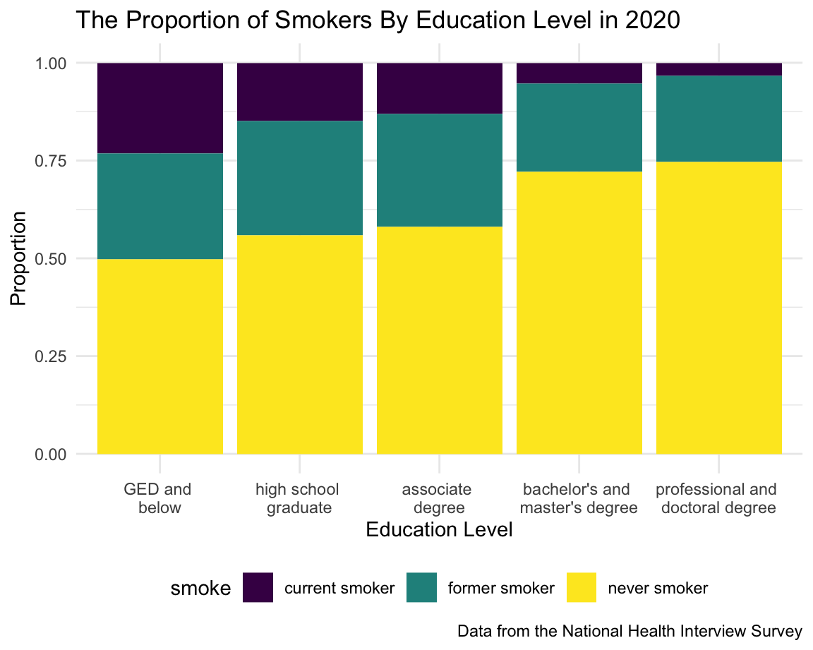
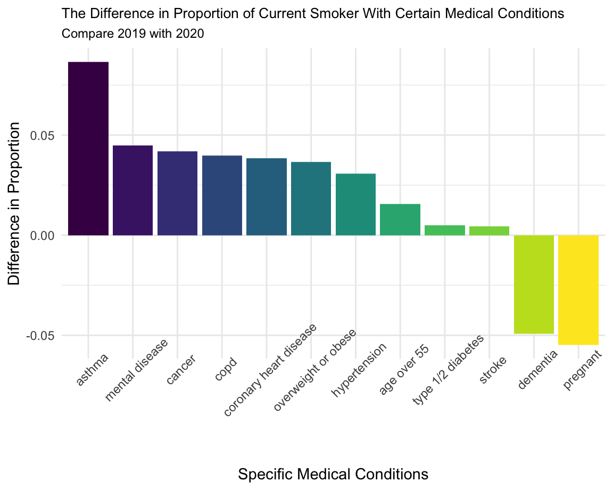

age_df =
adult_smoke %>%
filter(year == 2020) %>%
filter(age <= 85)
age_df %>%
ggplot(aes(x = age, color = smoke, fill = smoke)) +
geom_density(alpha = 0.5) +
labs(
title = "The Distribution of Age Among Different Groups of Smoker in 2020",
x = "Age",
y = "Density",
caption = "Data from the Nationnal Health Interview Survey"
)In the density plot, people in the age between 50-70 have the biggest potential to become a smoker, also people at the age of 30 also have great risk of being a smoker. People at the age above 60 have the biggest possibility to be a former smoker.
sex_df =
adult_smoke %>%
filter(year == 2020) %>%
group_by(smoke,sex) %>%
summarise(n = n()) %>%
filter(sex %in% c("female","male"))
sex_df %>%
ggplot(aes(x = sex, y = n, fill = smoke)) +
geom_bar(position = "stack", stat = "identity") +
labs(
title = "The Distribution of Smoker By Sex in 2020",
x = "Sex",
y = "Count",
caption = "Data from the National Health Interview Survey"
)From the distribution of smoker by sex in 2020, female have more never-smoker compare to male, also have a higher percentage of never-smoker, which means that female have a higher probability of not smoking compare to male.
orient_df =
adult_smoke %>%
filter(year == 2020) %>%
filter(!orient %in% c("refused", "not ascertained","don't know")) %>%
mutate(orient = fct_relevel(orient, "straight", "gaylesbian", "bisexual", "else", "unknown")) %>%
group_by(orient, smoke) %>%
summarise(n = n()) %>%
group_by(orient) %>%
mutate(sum_orient = sum(n)) %>%
mutate(proportion = n / sum_orient)
orient_tb =
adult_smoke %>%
filter(year == 2020) %>%
filter(!orient %in% c("refused", "not ascertained","don't know")) %>%
mutate(orient = fct_relevel(orient, "straight", "gaylesbian", "bisexual", "else", "unknown")) %>%
group_by(orient) %>%
summarize(`Respondent Count` = n()) %>%
mutate(
`Sexual Orient` = recode(orient,
"straight" = "Straight",
"gaylesbian" = "Gay and Lesbian",
"bisexual" = "Bisexual",
"else" = "Something Else",
"unknown" = "Respondent Don't know"
)
) %>%
select(`Sexual Orient`, `Respondent Count`)
knitr::kable(orient_tb)| Sexual Orient | Respondent Count |
|---|---|
| Straight | 29147 |
| Gay and Lesbian | 570 |
| Bisexual | 407 |
| Something Else | 147 |
| Respondent Don’t know | 251 |
orient_df %>%
ggplot(aes(x = orient, y = proportion, fill = smoke)) +
geom_bar(position = "stack", stat = "identity") +
labs(
title = "The Proportion of Smoker By Sexual Orientation in 2020",
x = "Sexual Orientation",
y = "Proportion",
caption = "Data from the National Health Interview Survey"
)Among five sexual orientation, people have approximately similar proportions. People who are bisexual have the largest amount of current smoker, whereas people who are straight have the smallest amount of current smoker.
education_df =
adult_smoke %>%
filter(year == 2020) %>%
filter(!education %in% c("refused", "not ascertained", "don't know")) %>%
mutate(
education = ifelse(education %in% c("never attended/kindergarten only","grade 1-11","12th grade, no diploma","GED or equivalent"), "GED and below",
ifelse(education %in% c("high school graduate", "some college, no degree"), "high school graduate",
ifelse(education %in% c("associate degree: occupational...","associate degree: academic"), "associate degree",
ifelse(education %in% c("bachelor's degree", "master's degree"), "bachelor's and master's degree", "professional and doctoral degree"))))
) %>%
mutate(
education = fct_relevel(education, "GED and below", "high school graduate", "associate degree", "bachelor's and master's degree", "professional and doctoral degree")
) %>%
group_by(education, smoke) %>%
summarize(n = n()) %>%
group_by(education) %>%
mutate(sum_education = sum(n)) %>%
mutate(proportion = n / sum_education)
education_df %>%
ggplot(aes(x = education, y = proportion, fill = smoke)) +
geom_bar(position = "stack", stat = "identity") +
labs(
title = "The Proportion of Smokers By Education Level in 2020",
x = "Education Level",
y = "Proportion",
caption = "Data from the National Health Interview Survey"
) +
theme(axis.text.x = element_text(angle = 45))
From the graph above, people with higher education level tends to have lower risk of being a smoker, on the contrary, people who are poor-educated have higher risk of being a smoker, whether currently or formerly.
race_df =
adult_smoke %>%
filter(year == 2020) %>%
filter(!race %in% c("refused", "not ascertained", "don't know")) %>%
mutate(
race = recode(race,
"black or african american" = "black",
"aian" = "aian and other")
) %>%
mutate(
race = fct_relevel(race, "white", "hispanic", "black", "asian", "aian and other", "multiple races")
) %>%
group_by(race, smoke) %>%
summarize(n = n()) %>%
group_by(race) %>%
mutate(sum_race = sum(n)) %>%
mutate(proportion = n / sum_race)
race_tb =
adult_smoke %>%
filter(year == 2020) %>%
filter(!race %in% c("refused", "not ascertained", "don't know")) %>%
mutate(
race = recode(race,
"black or african american" = "black",
"aian" = "aian and other")
) %>%
mutate(
race = fct_relevel(race, "white", "hispanic", "black", "asian", "aian and other", "multiple races")
) %>%
group_by(race) %>%
summarize(`Respondent Count` = n()) %>%
mutate(
Race = recode(race,
"white" = "White",
"black" = "Black",
"hispanic" = "Hispanic",
"asian" = "Asian",
"aian and other" = "AIAN and Other",
"multiple races" = "Multiple Races")
) %>%
select(Race, `Respondent Count`)
knitr::kable(race_tb)| Race | Respondent Count |
|---|---|
| White | 21753 |
| Hispanic | 3734 |
| Black | 3094 |
| Asian | 1651 |
| AIAN and Other | 423 |
| Multiple Races | 324 |
race_df %>%
ggplot(aes(x = race, y = proportion, fill = smoke)) +
geom_bar(position = "stack", stat = "identity") +
labs(
title = "The Proportion of Smokers By Race in 2020",
x = "Race",
y = "Proportion",
caption = "Data from the National Health Interview Survey"
)People who is Aian and other have the largest amount of smokers, and people who is Asian have the smallest amount of smokers. White people also have a large amount of smokers.
disability_df =
adult_smoke %>%
filter(year == 2020) %>%
filter(disability != "don't know") %>%
mutate(disability = fct_relevel(disability, "yes", "no")) %>%
group_by(disability, smoke) %>%
summarize(n = n()) %>%
group_by(disability) %>%
mutate(sum_disability = sum(n)) %>%
mutate(proportion = n / sum_disability)
disability_df %>%
ggplot(aes(x = disability, y = proportion, fill = smoke)) +
geom_bar(position = "stack", stat = "identity") +
labs(
title = "The Proportion of Smokers By Disability in 2020",
x = "Disability",
y = "Proportion",
caption = "Data from the National Health Interview Survey"
)People with disability have a higher proportion of smokers compare to people without disability, both currently and formerly.
cancer_df = cancer_df %>% mutate(disease = "cancer")
asthma_df = asthma_df %>% mutate(disease = "asthma")
copd_df = copd_df %>% mutate(disease = "copd")
heart_disease_df = heart_disease_df %>% mutate(disease = "coronary heart disease")
hypertension_df = hypertension_df %>% mutate(disease = "hypertension")
mental_df = mental_df %>% mutate(disease = "mental disease")
bmi_df = bmi_df %>% mutate(disease = "overweight or obese")
dementia_df = dementia_df %>% mutate(disease = "dementia")
diabetes_df = diabetes_df %>% mutate(disease = "type 1/2 diabetes")
stroke_df = stroke_df %>% mutate(disease = "stroke")
preganant_df = preganant_df %>% mutate(disease = "pregnant")
difference_df =
rbind(cancer_df, asthma_df, copd_df, heart_disease_df, hypertension_df, mental_df, bmi_df, dementia_df, diabetes_df, stroke_df, preganant_df) %>%
select(year, disease, smoke, n, sum, proportion) %>%
filter(smoke == "current smoker") %>%
select(year, disease, proportion) %>%
pivot_wider(
names_from = year,
values_from = proportion
) %>%
mutate(
prop_diff = `2019` - `2020`
) %>%
select(disease, prop_diff) %>%
mutate(
prop_rank = min_rank(desc(prop_diff))
)
difference_df %>%
mutate(
disease = fct_reorder(disease, prop_rank)
) %>%
ggplot(aes(x = disease, y = prop_diff, fill = disease)) +
geom_bar(stat = "identity") +
labs(
title = "The Difference in Proportion of Current Smoker With Specific Disease",
subtitle = "Compare 2019 with 2020",
x = "Specific Disease",
y = "Difference in Proportion"
) +
theme(axis.text.x = element_text(angle = 45),
plot.title = element_text(size = 12),
plot.subtitle = element_text(size = 11),
legend.position = "None") 
Among those diseases, asthma have a largest difference of smoking number compare 2019 with 2020, and astham, mental disease, cancer, copd, coronary heart disease, overweight or obese, hypertension, diabetes and stroke all have positive difference between 2019 and 2020, which means people with those disease tend to quit smoking in the year of 2020. Dementia and pregnant population have the negative difference, the smoking number of 2020 of those two diseases goes up compare with 2019.